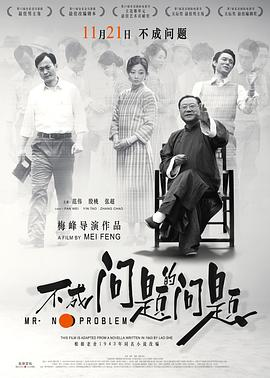

收藏下载分享
类型：大陆综艺 / 音乐 / 综艺地区：大陆年份：2024
导演：未知
演员：张超 / 梁朋杰 / 马佳 / 鞠红川 / 洪之光 / 阿云嘎 / 黄子弘凡 / 方书剑 Shujian Fang / 李琦 / 高杨
线路1 线路2
《吾湖音乐局》围绕一群因音乐而在梅溪湖剧院结缘的宝藏男孩们6年后重聚的故事。6年前，他们因才华横溢而被大众所识、喜爱。6年后，因坚定的音乐梦想让他们再次重聚，回到湖南乡间展开久违的合宿生活，与好友们一
已完结
 更新HD中字
第24集完结
确定